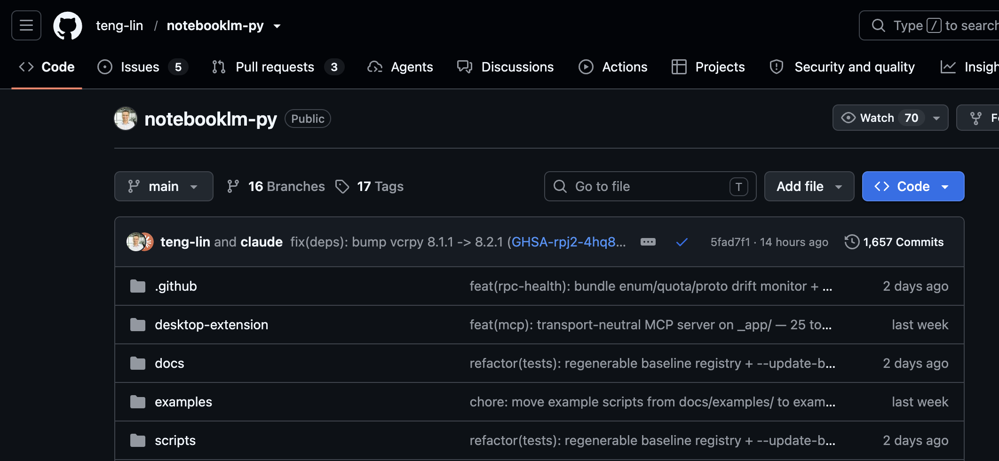
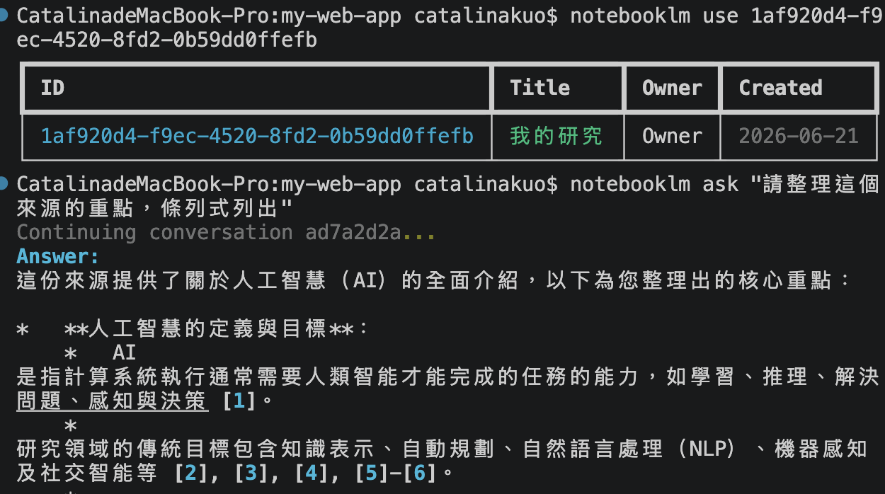

建立知識庫
整理資料
終端機直接完成
建立研究
新增來源
直接提問

pip install "notebooklm-py[browser]" playwright install chromium
notebooklm login notebooklm auth check --test --json
notebooklm create "我的研究" notebooklm use <notebook_id>

網址 → 知識庫 → AI整理
留言「工具」
拿 GitHub 連結與安裝程式碼